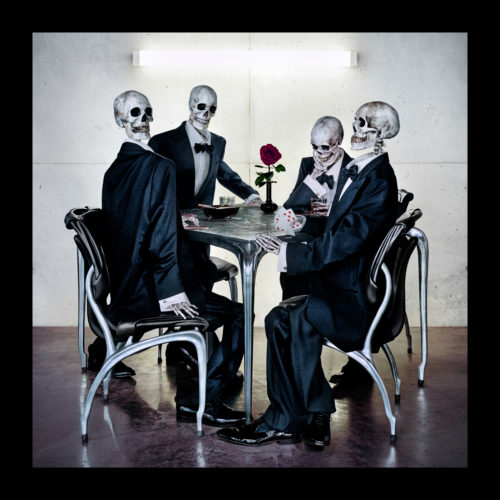
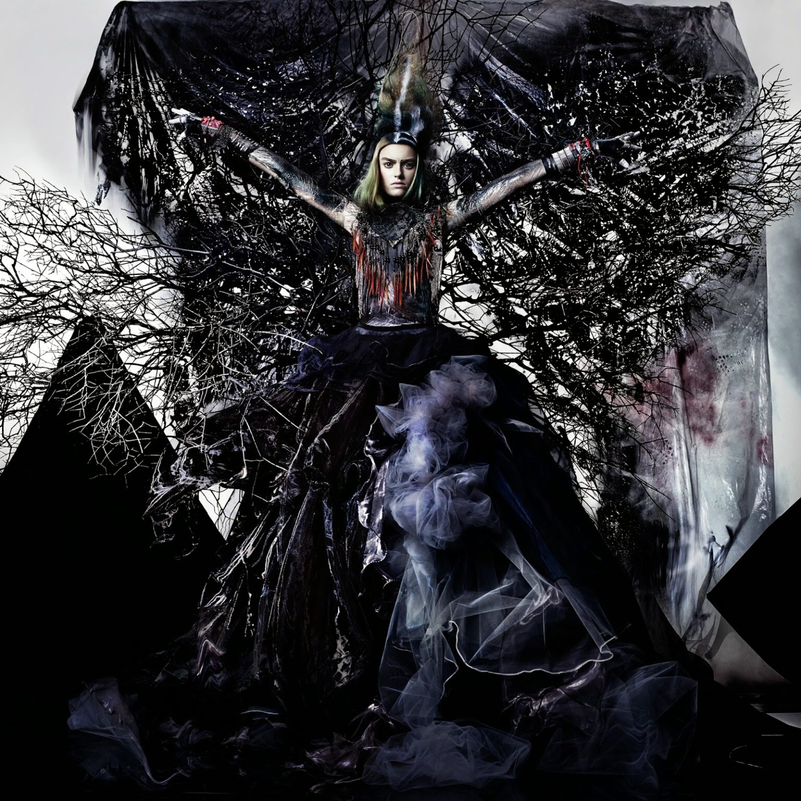
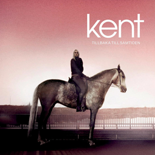
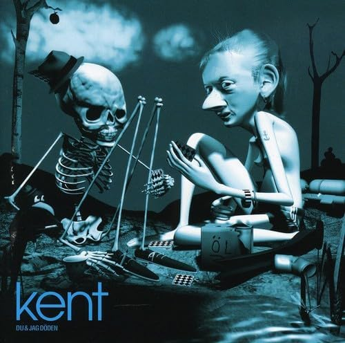
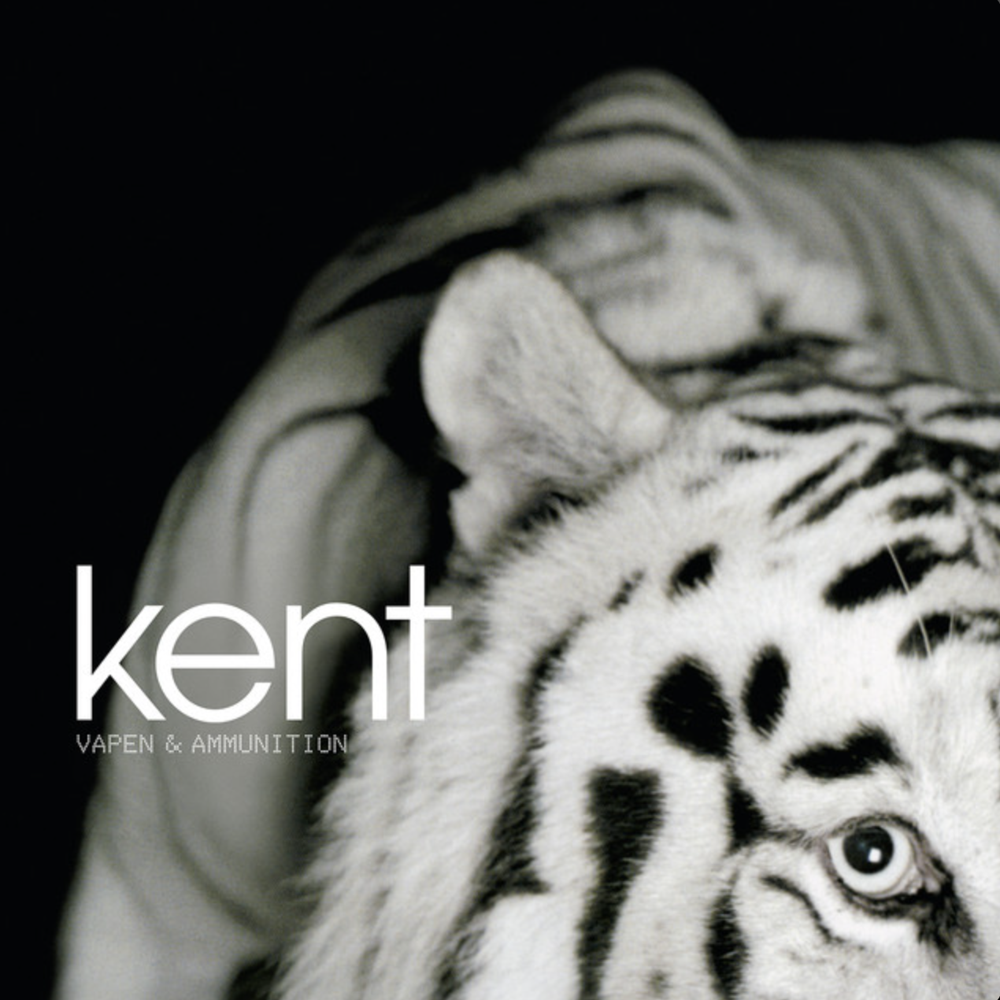
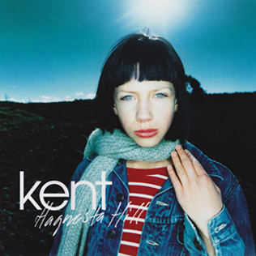
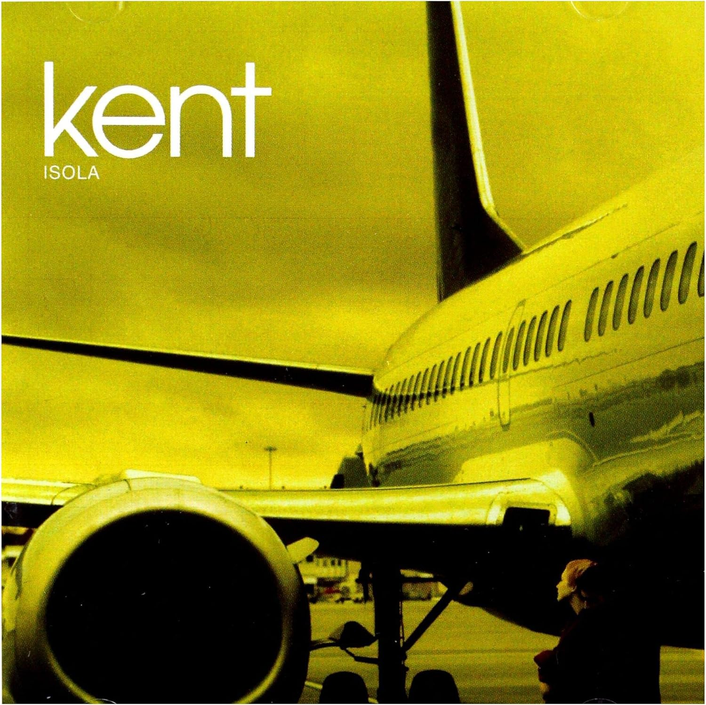
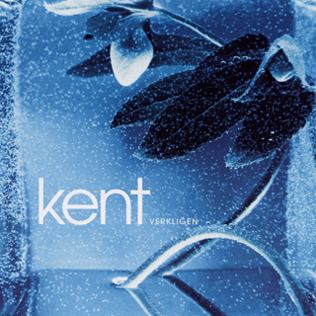
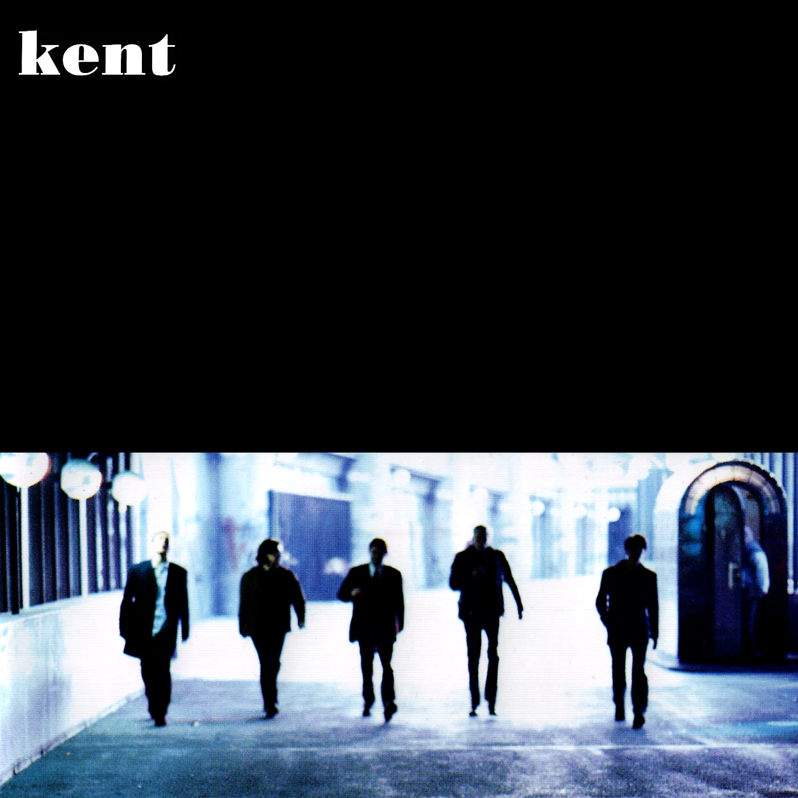

Kent (stiliserat som kent) är en svensk musikgrupp från Eskilstuna bildad 1990 som Jones & Giftet. Kent etablerade sig som en av de mest framgångsrika grupperna i Skandinavien. Med mer än 2,3 miljoner sålda fullängdsalbum har Kent flera gånger givits epitetet "Sveriges största rockband", men bandet har även verkat inom andra musikgenrer som pop och syntpop.
Källor och bilder: Wikipedia kent.nu
| Album namn | Årtal | Albumcover |
|---|---|---|
| Då som nu för alltid | 2016-05-20 |  |
| Tigerdrottningen | 2014-04-30 |  |
| Jag är inte rädd för mörkret | 2012-04-25 |
|
| En plats i solen | 2010-06-30 | |
| Röd | 2009-11-06 | |
| Tillbaka till samtiden | 2007-10-17 |  |
| Du & jag döden | 2005-03-15 |  |
| Vapen & ammunition | 2002-04-15 |  |
| B-sidor 95-00 | 2000-11-29 |
|
| Hagnesta Hill (sv/en) | 2000-04-28 |  |
| Isola (sv/en) | 1998-04-27 |  |
| Verkligen | 1996-03-15 |  |
| Kent | 1995-03-15 |  |